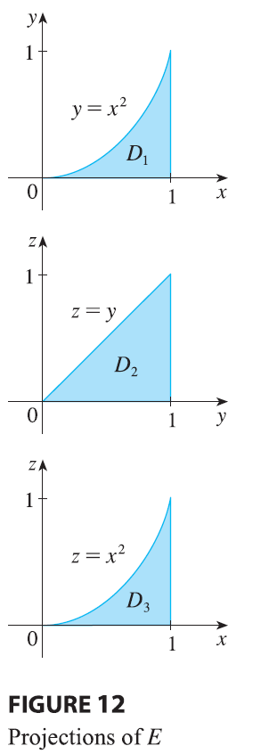
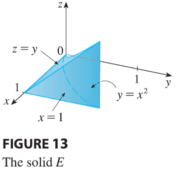

SOLUTION We can write \[
\int_0^1 \int_0^{x^2} \int_0^y f(x, y, z) dz dy dx = \iiint_E f(x, y, z)
dV
\] where \(E = \{(x, y, z) | 0 \le x
\le 1, 0 \le y \le x^2, 0 \le z \le y\}\). This description of
\(E\) enables us to write projections
onto the three coordinate planes as follows: on the \(xy\)-plane: \(D_1
= \{(x, y) | 0 \le x \le 1, 0 \le y \le x^2\} = \{(x, y) | 0 \le y \le
1, \sqrt{y} \le x \le 1\}\) on the \(yz\)-plane: \(D_2
= \{(y, z) | 0 \le y \le 1, 0 \le z \le y\}\) on the \(xz\)-plane: \(D_3
= \{(x, z) | 0 \le x \le 1, 0 \le z \le x^2\}\) From the
resulting sketches of the projections in Figure 12 we sketch the solid
\(E\) in Figure 13. We see that it is
the solid enclosed by the planes \(z = 0, x =
1, y = z\) and the parabolic cylinder \(y = x^2\) (or \(x
= \sqrt{y}\)). If we integrate first with respect to \(x\), then \(z\), and then \(y\), we use an alternate description of
\(E\): \[
E = \{(x, y, z) | 0 \le y \le 1, 0 \le z \le y, \sqrt{y} \le x \le 1\}
\] Thus \[
\iiint_E f(x, y, z) dV = \int_0^1 \int_0^y \int_{\sqrt{y}}^1 f(x, y, z)
dx dz dy
\]